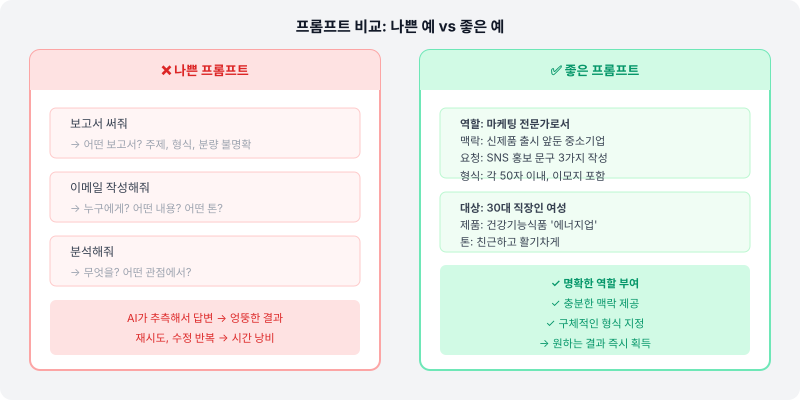

✍️ "AI가 이상한 답을 줘요" — 보통 프롬프트 문제입니다
혹시 AI에게 뭔가를 부탁했는데 "이게 내가 원하는 게 아닌데…"라는 경험 해보셨나요? 그럴 때 대부분은 AI의 문제가 아니라, 업무 지시서(프롬프트)를 더 구체적으로 쓰면 해결됩니다.
생각해보면 직원에게 업무를 지시할 때도 마찬가지예요. "보고서 써줘"보다 "이번 분기 매출 현황을 임원 보고용으로 1페이지 요약해줘"가 훨씬 좋은 결과를 냅니다. AI도 똑같아요.
📋 좋은 프롬프트의 5가지 요소
꼭 5가지를 다 넣을 필요는 없어요. 하지만 원하는 결과가 안 나올 때 이 요소들을 하나씩 추가해보세요.
역할 (Role) — "너는 ~야"
AI에게 어떤 전문가처럼 답해달라고 역할을 부여해요.
예: "너는 10년 경력의 마케터야", "경험 많은 HR 담당자처럼 답해줘"
맥락 (Context) — "상황은 이래"
관련 배경 정보를 제공해요. AI는 내 상황을 모르니까요.
예: "이번 달 영업 실적이 목표의 80%야. 팀장에게 보고해야 해."
과제 (Task) — "이걸 해줘"
원하는 결과물을 명확히 말해요. 동사로 시작하면 좋아요.
예: "보고 이메일을 써줘", "3가지 개선 방안을 제안해줘", "표로 정리해줘"
형식 (Format) — "이렇게 보여줘"
결과물의 길이, 구조, 형식을 지정해요.
예: "500자 이내로", "글머리 기호로", "3단락으로", "표 형식으로"
예시 (Example) — "예를 들면 이런 느낌"
원하는 스타일이나 결과의 예시를 보여주면 AI가 훨씬 잘 따라와요.
예: "이런 톤으로 써줘: [예시 문장]", "이전에 쓴 것처럼: [이전 내용]"
🔑 Google이 추천하는 TCREI 프레임워크
Google은 AI 프롬프트를 잘 쓰는 방법으로 TCREI 5가지 요소를 제안합니다. 앞서 배운 5요소와 비슷하지만, 특히 반복 개선(Iterate)을 핵심으로 강조하는 점이 특징입니다.
예: "작성해줘", "분류해줘", "요약해줘", "표로 정리해줘"
예: "우리 회사는 B2B SaaS 기업이고, 다음 달 신규 기능을 출시해"
예: "이 문장 스타일처럼: [예시]", "지난번에 쓴 이 이메일처럼 해줘"
예: "200자 이내로", "전문 용어 없이", "20~30대가 이해할 수 있는 수준으로"
예: "더 짧게", "2번 항목을 더 구체적으로", "톤을 더 친근하게 바꿔줘"
TCREI 실전 예시 — 보고서 작성 요청
[T - 과제] 이번 분기 팀 성과를 임원 보고용으로 요약해줘. [C - 맥락] 우리 팀은 마케팅팀이고, Q3 목표 달성률은 85%야. 주요 성과는 SNS 팔로워 20% 증가, 전환율 1.2%p 개선이야. [R - 참고] 아래처럼 간결하고 숫자 중심으로 써줘: "Q2 신규 가입자 12% 증가, 이탈률 0.5%p 개선." [E - 평가 기준] - 3단락 이내 - 숫자와 퍼센트 중심 - 전문 용어 최소화 [I - 이후 개선] 결과를 보고 "더 짧게" 또는 "항목별로 나눠줘"라고 추가 요청
둘 다 좋은 프레임워크입니다. 처음엔 5요소(역할·맥락·과제·형식·예시)로 시작하고, 익숙해지면 TCREI의 Iterate(반복 개선) 개념을 더해 대화를 이어가는 습관을 만들어 보세요. 두 프레임워크를 합치면 AI와 더 자연스럽게 협업할 수 있습니다.
🔄 나쁜 프롬프트 vs 좋은 프롬프트
❌ 이렇게 하면 아쉬워요
"이메일 써줘"
→ AI가 어떤 이메일인지, 누구에게 보내는지, 어떤 톤인지 몰라요
✅ 이렇게 해보세요
"신규 고객사 A기업 담당자에게 첫 미팅 후 감사 인사 이메일을 써줘. 전문적이지만 따뜻한 톤으로, 미팅에서 논의한 협업 가능성을 언급하고 다음 단계를 제안하는 내용. 3단락, 200자 이내."
→ AI가 원하는 결과를 정확히 만들 수 있어요
💡 업무별 프롬프트 실전 예시
📧 이메일 작성
📊 데이터 정리
💭 아이디어 발굴

🚫 자주 하는 실수
- 너무 짧게 쓰기: "요약해줘" → 무엇을, 어떻게, 얼마나 짧게?
- 결과물 형식 미지정: 표가 필요한데 글로 받거나, 짧게 필요한데 길게 받는 경우
- 맥락 빠뜨리기: AI는 내 회사, 내 상황, 내 독자를 모릅니다
- 첫 답변에 포기하기: 추가 요청으로 계속 개선할 수 있어요
- 결과물 그대로 쓰기: AI 결과물은 초안입니다. 반드시 검토하고 수정하세요
✅ 프롬프트 자가 진단 체크리스트
AI에게 부탁하기 전, 이 항목들을 확인해보세요.